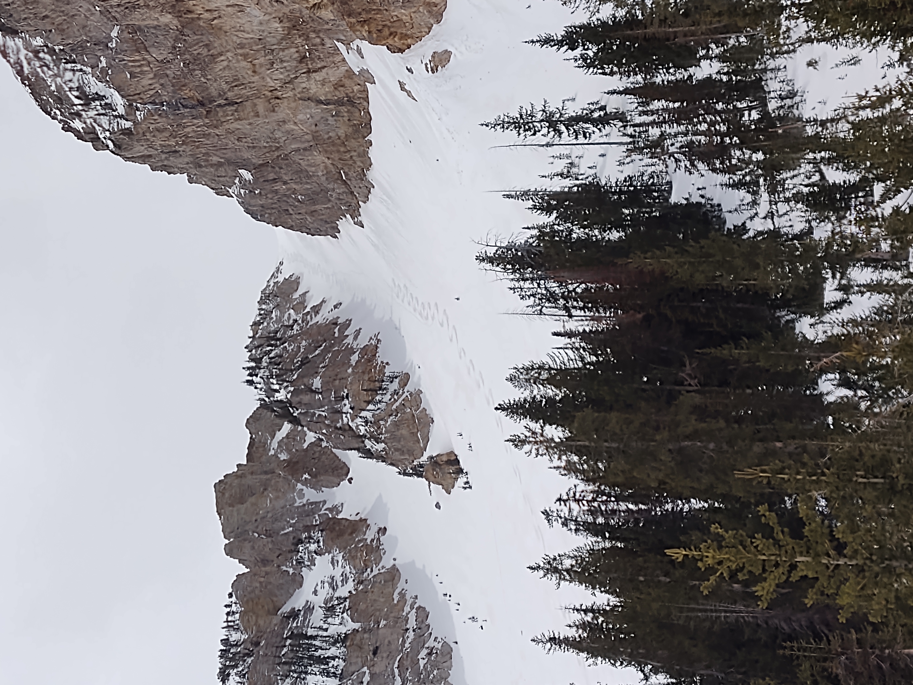

This is a really neat place. I always went there when snow conditions weren't the greatest, but I got some really good turns in, so it's okay. It hit a few rocks, but whatever.
I went in late spring, the only time when the gate is finally open so that you can drive your car up to the closest trail-head. You'll have better snow sooner, but you'll have a longer approach due to a locked gate. I think a bike-to-ski tour is possible here.
There are 3 big couliors to ski by Deseret Peak! And they're all awesome! And they're all super easy compared to Cold Fusion. I'd say they're great couloirs for anyone who's never done one before.

The first two are twins, south of the peak. The third (sometimes called Temple Couloir) is north of the peak. After ascending any of them, you can go tag the peak, if you want, and if there's enough snow, ski back down to one of the couloirs.
Either of the twins is easy. The Temple is the hardest one, and I'd say the crux is just where it's steepest just before topping out. Dropping into the Temple initially is the hardest part, but if you can do that and not manage to blow the first fiew turns, you're golden.
A helmet is a really good idea, because in spring, the ice is melting, and the mountain is crumbling, and rocks are falling. Don't linger too long in the couloirs.
I'll add here that it's also very much worth it to come here in the early summer once all the snow has melted and just do the hiking. You can hike up one drainage, tag the peak, then come down an entirely different drainage. The wildflowers are really beautiful.
Occationally it's nice to leave the Wasatch and visit a different range of mountains. From the Peak of Deseret, looking to the west is an interesting site. A whole hell-of-a-lotta nothin', but still really pretty. I love the remote feeling you can get here.
